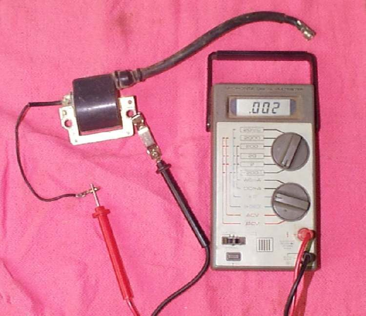
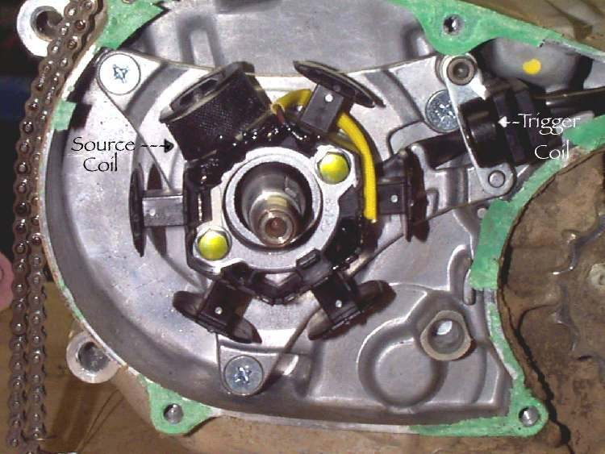
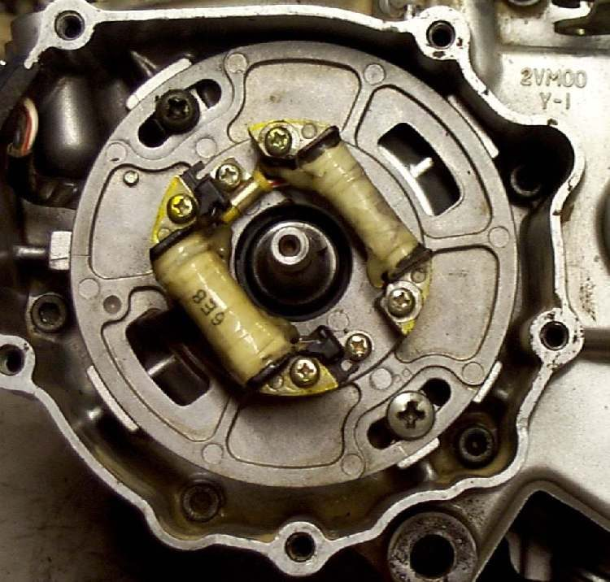

A spark tester shows no spark while the engine cranks. The ignition chain is: power (battery or a source coil in the stator), switches, pick-up (timing signal), CDI or ECU, coil, cap and plug. A break anywhere gives no spark. Test in this order, the same order the K-Light 125 manual uses: battery, wiring and connectors, plug, coil, pick-up, then the ECU (PDF page 86). Expensive modules come last because they are rarely the cause.
Is it safe to ride?
The engine will not run. When testing, never hold the plug lead by hand or touch it to the frame to make a spark; use an enclosed spark tester.
Quick checks first
- Engine stop switch on RUN.
- Side stand up and bike in neutral (some bikes cut the spark in gear with the stand down).
- Plug cap pushed fully on, no water in it.
- Battery charged (needed for battery-powered CDI and all fuel-injected bikes).
- Fuel-injected: does the warning light come on at key ON?
- Do not pull the plug cap or unplug any ignition part with the engine running. The voltage is high and can damage the ignition.
Diagnose it step by step
1Try a new, correctly gapped plug in the tester. Is there a spark now?
- Yes: the old plug was faulty. Remove, check, gap and fit a spark plug.
- No: go to step 2. Use Check for a spark safely.
2Is the battery charged and are the main fuse and ignition fuse good?
- No: Test and charge a 12 V battery and Check fuses and relays.
- Yes (or a magneto bike with no battery): go to step 3.
3Do the engine stop switch and key switch pass a continuity test?
- No: Test the engine stop switch.
- Yes: go to step 4.
4Do the side stand, neutral and clutch switches work? Does unplugging the side stand switch change anything?
- Faulty switch: Test the side stand, clutch and neutral switches.
- All fine: go to step 5.
5Are the coil connectors, CDI or ECU plug and stator connector clean, dry and tight?
- No: Clean and seal electrical connectors.
- Yes: go to step 6.
6Does the coil and cap pass the checks, or does a known good coil give a spark?
- Coil faulty: replace it. Test the ignition coil and plug cap.
- Coil good: go to step 7.
7Is the pick-up resistance in range? K-Light 125: 150 ± 10 Ω at 20 °C.
- No: Test the ignition pick-up.
- Yes: go to step 8.
8Magneto (AC) CDI bikes: does the source coil in the stator test good?
- No: Test the stator (generator coils).
- Yes, or battery-powered: the CDI or ECU is now the suspect. Diagnose a suspected CDI or ECU fault.
Causes, most likely first
| Cause | How to confirm | Fix |
|---|---|---|
| Engine stop switch on STOP or dirty | Continuity test | Test the engine stop switch |
| Fouled or broken plug | New plug sparks | Remove, check, gap and fit a spark plug |
| Side stand or neutral switch | Spark returns with switch fixed | Test the side stand, clutch and neutral switches |
| Wet or corroded connector | Green pins; works when dried | Clean and seal electrical connectors |
| Faulty coil or cap | Open winding; swap test | Test the ignition coil and plug cap |
| Faulty pick-up | Resistance out of range; crank sensor code | Test the ignition pick-up |
| CDI or ECU | All else tests good; swap test | Diagnose a suspected CDI or ECU fault |
| Worn or burnt contact points, or a failed condenser (older points ignition) | Pitted or blackened faces, heavy arcing; no spark even with clean, correctly gapped points | Inspect, clean and replace contact breaker points, Test an ignition condenser |
| Battery too low for a battery-fed electronic ignition | Starter still turns, but voltage sags; spark returns after charging | Test and charge a 12 V battery |
Reference values (K-Light 125)
| Item | Value | PDF page |
|---|---|---|
| Pick-up resistance | 150 ± 10 Ω at 20 °C | 87 |
| Spark plug gap | 0.7 ± 0.1 mm | 58 |